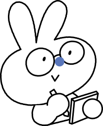
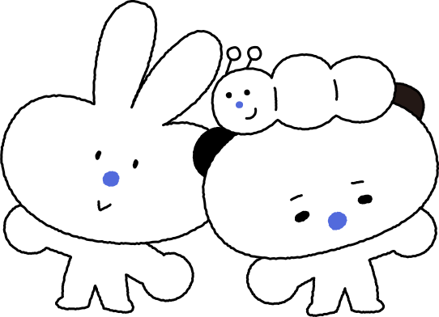
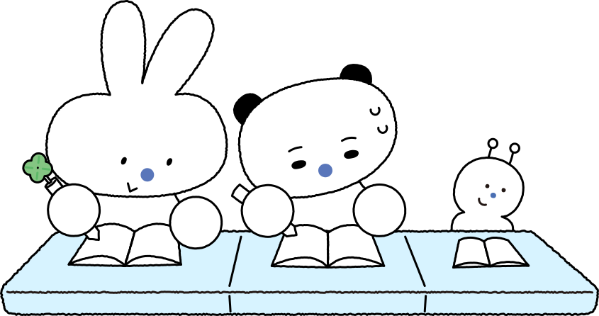

정답이 정해지지 않은 세상에서, 학생들은 무엇을 배워야 할까요?

기술과 사회가 빠르게 바뀌는 불확실성의 시대.
이제 교육의 과제는 ‘정해진 답을 잘 외우는 사람’이 아니라,
낯선 상황에서 스스로 방향을 찾아 나아가는 사람을 길러내는 것입니다.
왜 지금 학생 주도성인가
OECD는 Future of Education and Skills 2030 프로젝트를 통해 미래 교육의 방향을
‘OECD 학습 나침반 2030(Learning Compass 2030)’으로 제시했습니다. 목적지에 데려다주는 지도(GPS)가 아니라, 나침반을 든 이유가 핵심입니다.
왜 나침반일까?
정해진 길을 그대로 따라가는 것이 아니라, 낯설고 예측하기 어려운 상황 속에서 학생이 스스로 방향을 잡고 나아가도록 하기 위함입니다. 나침반이 가리키는 도착점은 시험 점수가 아니라 개인과 사회의 웰빙(Well-being 2030)입니다. 그 여정의 중심에 놓인 것이 바로 학생 주도성(Student Agency)입니다.
미래를 이끌 학생에게 OECD가 요구하는 것은
세 가지 변혁적 역량(Transformative Competencies)입니다.
모두 ‘주어진 것을 받는’ 능력이 아니라 스스로 만들어내는 능력입니다.
새로운 가치 창출
정해진 답을 넘어 새로운 것을 만들어내기
긴장과 딜레마 조정
서로 다른 관점·이해의 갈등을 조율하기
책임감 갖기
자기 행동의 결과를 성찰하고 책임지기
STUDENT AGENCY · 학생 주도성이란
스스로 목표를 세우고,
성찰하며,
책임감 있게 행동하여
변화를 만들어내는 역량
— OECD, “Student Agency for 2030” (Learning Compass 2030, 2019)
학생은 자신의 삶과 세상에 긍정적 영향을 미칠 능력과 의지를 가진 존재라는 믿음에 뿌리를 둡니다.

주도성은 이런 모습입니다
행동의 주체
남이 시켜서가 아니라, 스스로 움직입니다.acting, not being acted upon
세상을 만들어감
주어진 환경을 받아들이기보다, 바꾸어 갑니다.shaping, not being shaped
책임 있는 선택
남이 정해준 결정이 아니라, 스스로 판단합니다.responsible decision-making
주도성은 혼자 크는 것이 아닙니다. OECD는 또래·교사·부모·지역사회와 서로를 지지하는 관계 속에서
함께 자라는 협력적 주도성(Co-agency)을 강조합니다. 학생을 둘러싼 관계와 환경이 주도성의 토양입니다.
주도성은
주입이 아니라
실천으로 자랍니다
나침반 사용법을 아무리 설명해도, 직접 길을 잡아보지 않으면 방향 감각은 생기지 않습니다. 주도성도 마찬가지입니다. “주도적으로 살아라”라고 가르친다고 길러지지 않습니다. 스스로 목표를 정하고, 선택하고, 그 결과를 책임지는 경험을 반복할 때 비로소 몸에 뱁니다.
스스로 돌리는 학습의 사이클
OECD 학습 나침반은 주도성이 자라는 과정을 예상 → 행동 → 성찰이 반복되는 순환(AAR Cycle)으로 봅니다.
이 사이클은 누가 대신 돌려줄 수 없습니다. 학생이 직접 해봐야 돌아갑니다.
예상
내 선택이 가져올 결과를 내다보기
행동
목표를 향해 실제로 선택하고 실행하기
성찰
결과를 돌아보고 다음 선택을 다듬기
이 반복 속에서 주도성이 자랍니다
실천의 장을 제도로
주도성을 기르려면 학생이 직접 선택하고 책임지는 실천의 장이 필요합니다. 고교학점제는 그 장을 학교의 일상 제도로 설계합니다.
학생에게 두 가지를 함께 건넵니다 — 권한과 책임.
과목 선택권
학생이 자신의 진로와 흥미에 따라 무엇을 배울지 스스로 고릅니다.
학교가 짜준 시간표를 받는 것이 아니라, 나의 교육과정을 내가 설계합니다.
과목 이수 책임
선택한 과목을 스스로 이수해야 학점을 얻고 졸업합니다.
선택에는 책임이 따르고, 그 책임이 학습의 동기를 끌어냅니다.
과목 선택(권한) + 과목 이수(책임) = 학교 일상에서 돌아가는 AAR 사이클
선택은 곧 목표 설정이고, 이수의 과정은 곧 행동과 성찰, 그리고 책임입니다. 고교학점제는 학생 주도성의 순환을 학교 생활 그 자체로 만들어, 주도성을 ‘가르치는’ 것이 아니라 ‘견인’합니다.
왜 공부해야 하는지에 대해, 시스템으로 답을 줍니다
교사의 열정 어린 설득만이 아니라, 잘 설계된 제도가 학생의 행동을 이끕니다. 고교학점제는 ‘하고 싶은 것을 선택하고 책임지는’ 구조로 학생을 자기 학습의 주인으로 세웁니다.
주도성을 연습하는 도구들
온마당은 학생이 직접 선택하고 설계하며 주도성을 연습하도록 돕습니다.
급변의 시대에 미래를 이어갈 사람은 계속 배우는 학습자이다.
— Eric Hoffer (1973)
배움을 끝낸 사람에게는 과거의 세계에서 살아갈 기술밖에 남아 있지 않다.

참고 자료 · OECD (2019), Student Agency for 2030 및 OECD Learning Compass 2030, Future of Education and Skills 2030.
oecd.org — Learning Compass 2030(새 창)